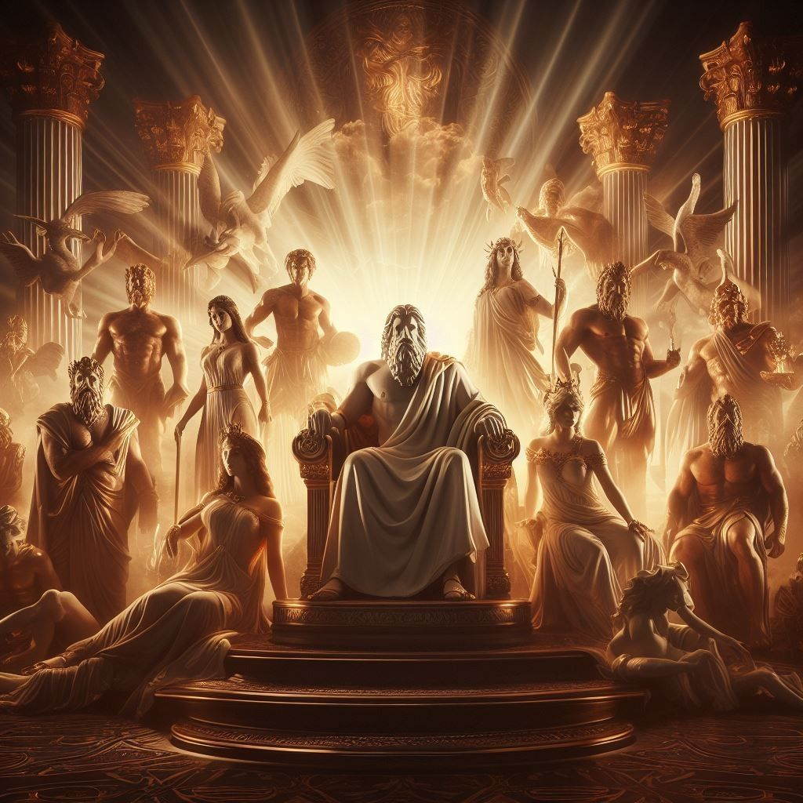
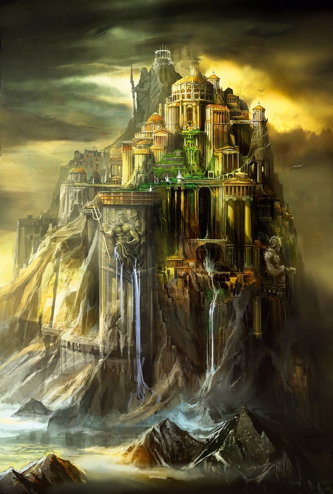
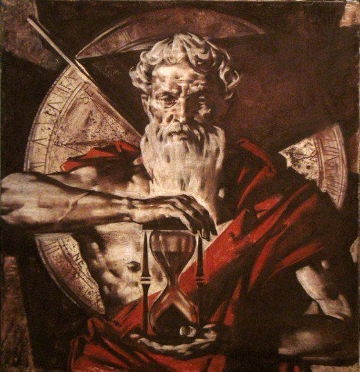
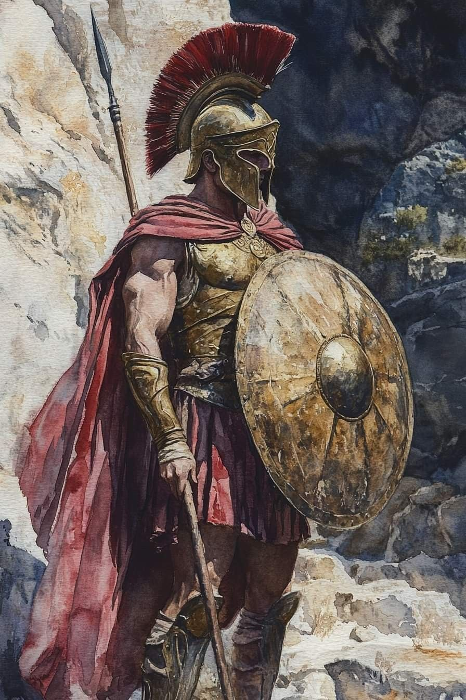
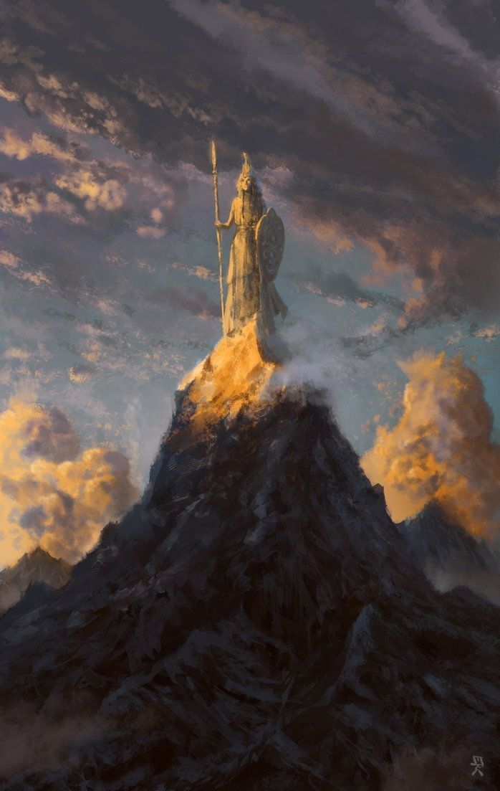
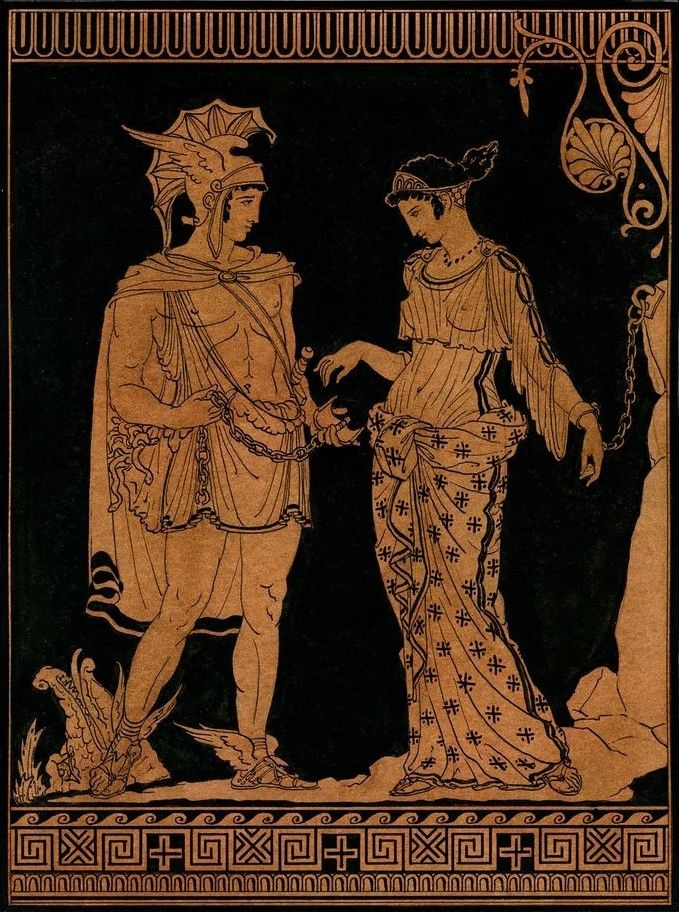
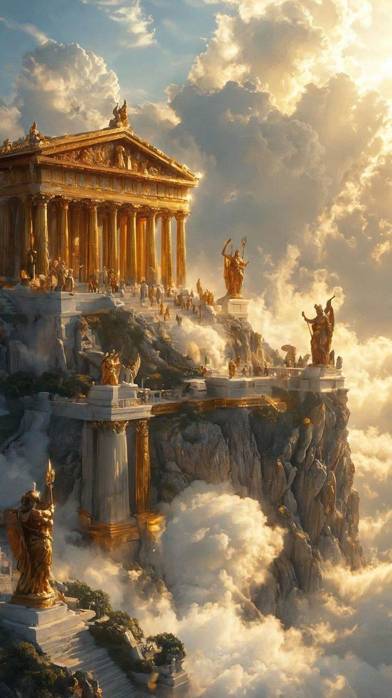
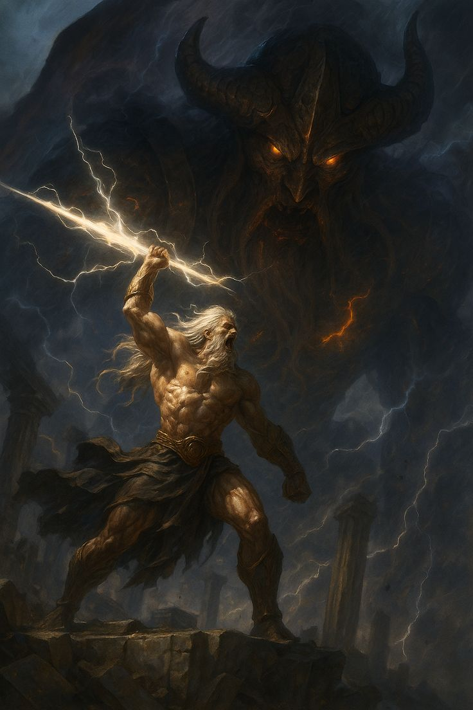
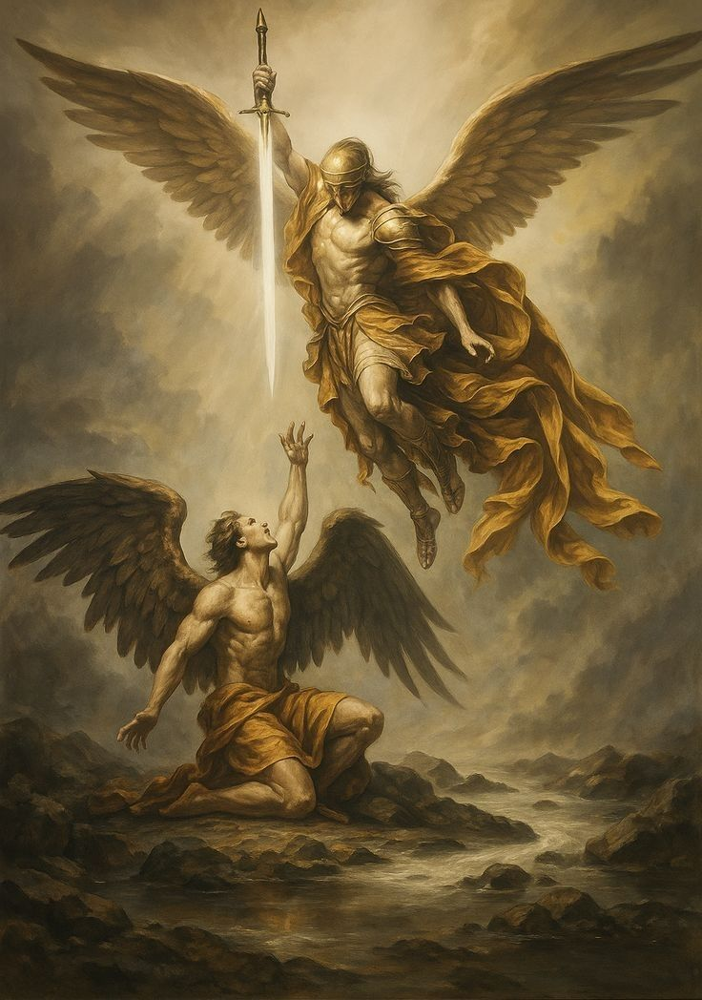

Gallery










"House of Olympus" is a mythology-inspired website that brings ancient legends and timeless tales to life through a creative, digital experience. Rooted in classical mythology, this project explores stories passed down through generations, filled with mystery, power, and symbolism.
Designed as a virtual storybook, the website combines storytelling with visual design — featuring elegant layouts, animated page turns, and a mystical atmosphere that captures the essence of ancient times.
Whether you are a student, researcher, or mythology enthusiast, "House of Olympus" offers a space to explore the wonders of myth in a modern, interactive way. It is both an educational resource and a tribute to the imagination and cultural heritage of the ancient world.
In Greek mythology, Mount Olympus is known as the majestic home of the Twelve Olympian gods. Rising high above the land of Greece, it was believed to touch the heavens and serve as a meeting place for divine councils. The gods ruled from golden palaces hidden among the clouds, watching over both mortals and immortals.
More than just a mountain, Olympus symbolized power, immortality, and the eternal bond between humans and the divine. From Zeus, the mighty king of the gods, to Athena, goddess of wisdom, each Olympian shaped myths that continue to inspire art, literature, and culture to this day.
The "House of Olympus" project draws inspiration from this sacred place, offering a digital realm where ancient stories are reimagined for modern audiences.
Discover the stories of the Olympian gods through this short documentary.